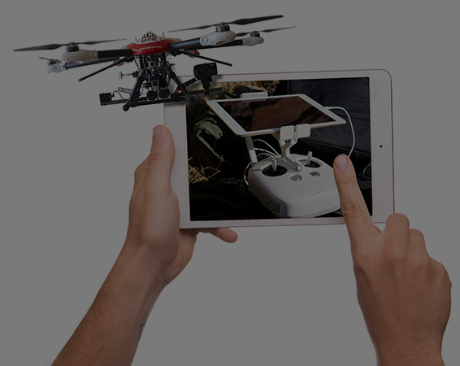

MASTER SUCCESS ARCHITECT in INNOVATION & ORGANIZATIONAL ENTREPRENEURSHIP CERTIFICATION
Achieve Self mastery… Discover the systems that govern our primal Brain… How our Brain does helps us survive… Use primal Creativity… Find out the most simple design equilibrium governing system built within us that makes our brains superior… Our Brains are engineered for success… How did engineers harness basic Brain mechanisms to build advance technology? What makes us superior to Artificial Intelligence Robots and where we are similar? Use our Cybernetic nature to create, think, achieve, develop, build character, grow, and succeed. Master your brains primal functions to escape the constant unchanging perception of the world. This training track teaches your organization’s leaders the primal Success Architecture tools to escape the constant and pursue an innovative future. Learn how to use disruptive strategies to tool-up your organization with innovative tinkering techniques to enable your leaders into the future. How did famous leaders redesign their entire organization when their core existence was threatened?
MAIN PROGRAMS
A PREREQUISITE IN SUCCESS ARCHITECTURE
A ONE Day Core Introductory
Essential for all Master Program Certification
Start with this training program to discover the concept behind Success Architecture… How does our Brain organize and architects data to foster natural creativity… How can we achieve self mastery; develop our character, and skills? What makes Success Architecture unique? What are the primal success mechanisms in our brain? How can we use these structures to enhance our life values?
CREATIVE SUCCESS ARCHITECTURE CORE
Become a Success Architect in This FIVE Days Core Training Program
Essential for all Master Program Certification
This main training program focuses on the infinite potential that exists in our primal brain which surpasses any built Computer Programs or machinery. Train in the actual mechanics that make up the components of Success Architecture. Develop these abilities, skills, know-how, and proficiency, to help you harness Success Architecture energies to add balance to your personal and professional life. How do you discover and architect your life plans in accordance with your basic primal instincts. What are the dimensions of personal character and how can you design and architect your personality? Success Architecture is founded on scientific progress in Brain technology, presented in a simple to understand applied methodology. Neurology, Artificial Intelligence, Systems Engineering are the basis for newest discoveries in this area. Make yourself intuitive with habitual automatic energies for Mental Toughness, Creativity, Innovation, Success, and Agility. Build habits in your life with Cybernetic.
THINK TANK
A FIVE Day Creative Thinking Course
Essential for all Master Program Certification
Thinking, Creativity, Innovation are skills that can be learnt. Learn the thinking strategies used by Leonardo da vinci, Einstein, Thomas Edison and genius from all ages. What is the ultimate creativity tool basic to our Brain? How to avoid crippling and preventing this mechanism? Learn the skill for natural primal creativity as part of Success Architecture mechanism… Make it part of your instinct. Use it to enhance your life in every aspect. How does data architect in your brain? Learn how data makes up information; and how the space between data structures make up creativity and innovation. How do we end up living inside a box and how do we escape the limiting factors imposed on our thinking brain. Learn types of thinking such as emotional and critical. How important is emotional intelligence in our lives. Learn 100 thinking tools for creativity and problem solving.
SUBSIDIARY PROGRAMS
Innovation: Organizational Tools and Strategies
FIVE Days in Organizational Innovation
Essential for Master Certification in Innovation & Organizational Entrepreneurship
Building innovation in the organization requires tools and strategies to harness and stream line production from innovators, collaborative colleagues, supportive management, information management systems, and external sources in the organization’s ecosystem. What modern innovation strategies are in use today to introduce new products in the market? How can you seamlessly solicit process or service innovative products to pursue either a value or low cost based business strategy? This course is about how to create unique customer value by delivering a great product, service, or process that satisfies certain needs; and in return capture value back. Successful innovative Organization embed clear, and precise value proposition in a coherent business model in order to create and capture value.

Innovation: Corporate Entrepreneurship
FIVE Days in Corporate Entrepreneurship
Essential for Master Certification in Innovation & Organizational Entrepreneurship
In a context of intense competition, severe market disruption, and an increasingly changing competitive global business environment, innovation becomes indispensable. Successful Organization’s recognize this imperative and place appropriate innovation system to support and extend their capabilities. Organizations must develop and sustain holistic innovation programms to identify and generate high impact business opportunities and ideas, hence transforming them into purposeful innovations that create significant value in their ecosystem. This high competitiveness leads to a dilemma making innovation a key to survive; whilst repeatability, execution, and operational control focus inherent to organizations may signify a barrier to replicate entrepreneurial behavior through the entire business.
{{item.title}}
{{item.description}}